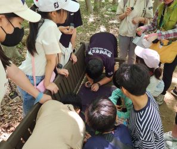

캠페인 이야기
우리의 숲, 함께 가꾸는 이야기 - Chapter1. FOREST CREW 캠페인의 시작
생명의숲은 지난 봄부터 "Make Us Green in Forest - FOREST CREW" 캠페인을 전국에서 실행하고 있습니다. 이 캠페인은 카카오메이커스의 후원을 통해 강원영동, 경북, 부산, 대전충남, 울산에서 활발히 진행되고 있습니다. 이 글을 통해 캠페인의 시작과 그동안의 성과, 그리고 앞으로의 계획을 나누고자 합니다. FOREST CREW는 이 캠페인에 참여한 그리고 참여할 모든 분들을 뜻합니다.
